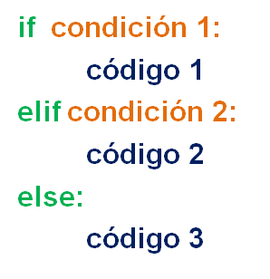

Objetivos:
- Que apliques los conocimientos sobre el estatuto if anidado en el
desarrollo de un programa.
- Que seas capaz de utilizar las instrucciones de captura y desplegado
de información.
- Que ejercites la habilidad de hacer frente a los mensajes de error
que envía la herramienta de desarrollo.

Forma de trabajo:
Actividad individual

Tiempo estimado:
90 minutos

Instrucciones:
- Desarrolla e implementa, en
conjunto con el profesor, los siguientes algoritmos y programas.
-
Utiliza el siguiente
esquema como apoyo para desarrollar tu laboratorio:


Ejercicios:
|
Clasificación de carbohidratos |
Cantidad
de moléculas |
| Monosacáridos |
1 |
| Disacáridos |
2 |
| Oligosacáridos |
Entre 3 y 10 |
| Polisacáridos |
11 o más |
-
Utiliza la sentencia de control
if anidado para desarrollar el algoritmo y un programa completo en
Python que de acuerdo al número de moléculas
te diga la clasificación del carbohidrato, y si és monosacárido
que te diga el nombre.
Ejemplo 1:
- Introduce
la cantidad de moléculas : 1
Se desplegará : La clasificación de carbohidratos es:
Monosacáridos
- Introduce
la cantidad de átomos: 4
Se desplegará : El nombre del
monosacárido es: Tetrosa
Ejemplo 2:
- Introduce
la cantidad de moléculas : 1
Se desplegará : La clasificación de carbohidratos es:
Monosacáridos
- Introduce
la cantidad de átomos: 7
Se desplegará : "El número de átomos es
incorrecto"
Ejemplo 3:
- Introduce
la cantidad de moléculas : 5
Se desplegará : La clasificación de carbohidratos es:
Oligosacáridos
.
Ejemplo 4:
- Introduce
la cantidad de moléculas : 20
Se desplegará : La clasificación de carbohidratos es:
Polisacáridos
Ejemplo 5:
- Introduce
la cantidad de moléculas : -5
Se desplegará : "El número de moléculas es incorrecto"
- Guardar el archivo con el nombre: C4_Matricula.py
- Guardar el archivo con el nombre: C5_Matricula.py

Especificaciones de entrega:
- Formato de entrega: py
- Nombre de los
entregables: C4_matrícula.py y C5_matrícula.py
- Medio de entrega:
Se entrega en Canvas en la sección de Laboratorio:
If anidado
Instrucciones para enviar tus archivos por Canvas:
- Haz clic en la actividad de
Laboratorio: If anidado
- Haz clic en el botón de
Entregar tarea.
- En el fólder de Carga
del archivo, haz clic en el botón de Examinar
y localiza el archivo *.py. Si necesitas agregar más
archivos, haz clic en +Agregue otro archivo, haz
clic en el botón de Examinar y localiza el otro
archivo *.py.
- Cuando hayas terminado de
subir tus archivos, haz clic en el botón de Entregar
tarea y listo!!
|